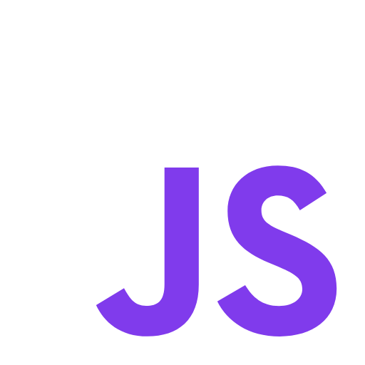

Aprende sobre las tecnologías y herramientas que permiten construir las interfaces visuales que los usuarios ven e interactúan en los sitios web.
¿Qué es el Front-End?
El desarrollo Front-End se centra en todo lo que los usuarios ven y utilizan directamente en sus navegadores. Desde colores y fuentes hasta animaciones y botones interactivos, el Front-End es responsable de la experiencia visual y de usuario.
Tecnologías principales del Front-End
HTML
HTML es el lenguaje de marcado que da estructura al contenido de las páginas web. Es el núcleo que define el contenido visual y su jerarquía.
CSS
CSS permite personalizar la apariencia de las páginas web, como colores, tipografías, tamaños y posicionamiento de elementos.

JavaScript
JavaScript añade interactividad a las páginas web, como animaciones, validaciones de formularios y contenido dinámico.
¿Qué es HTML y cómo funciona?
HTML, o Lenguaje de Marcado de Hipertexto (HyperText Markup Language), es el estándar para estructurar el contenido en la web. Cada página web que visitas está construida con HTML. Es como los ladrillos que forman un edificio.
Las etiquetas HTML están encerradas entre los signos < y >. Por ejemplo, una etiqueta básica es <p>, que representa un párrafo.
La mayoría de las etiquetas tienen una etiqueta de apertura y una de cierre:
<p>Esto es un párrafo.</p>
La etiqueta de apertura <p> indica dónde comienza el párrafo, y la etiqueta de cierre </p> indica dónde termina. El contenido va entre estas etiquetas.
Partes principales de un documento HTML
A continuación, veremos cada una de las etiquetas esenciales con ejemplos sencillos. Estas etiquetas forman la base de cualquier página HTML.
<!DOCTYPE html>: Declaración
Esta etiqueta le indica al navegador que el archivo sigue las reglas de HTML5.
<!DOCTYPE html>
<html>: La raíz del documento
Esta etiqueta contiene todo el contenido de la página web. Es la raíz del documento HTML.
<html>
...
</html>
<head>: Información sobre la página
Contiene metadatos sobre la página, como el título que aparece en la pestaña del navegador.
<head>
<title>Mi página</title>
</head>
<body>: Contenido visible
Aquí va todo el contenido visible de la página, como texto, imágenes y enlaces.
<body>
<h1>Hola Mundo</h1>
</body>
Ejemplo completo:
<!DOCTYPE html>
<html>
<head>
<title>Mi página</title>
</head>
<body>
<h1>¡Hola, mundo!</h1>
<p>Este es un ejemplo básico de HTML.</p>
</body>
</html>
Herramientas populares para el Front-End
En el desarrollo Front-End, existen herramientas y tecnologías que ayudan a crear páginas web de manera más rápida, eficiente y con mejores resultados visuales. A continuación, explicamos las principales categorías de herramientas que debes conocer:
Frameworks CSS:
Los frameworks CSS son bibliotecas de estilos predefinidos que te permiten diseñar páginas rápidamente. En lugar de escribir todo desde cero, puedes usar componentes ya hechos como botones, menús y diseños de cuadrícula.
Ejemplos: Bootstrap, Tailwind CSS
Frameworks de JavaScript:
Estos frameworks simplifican la creación de interfaces de usuario interactivas. Ayudan a manejar eventos, actualizar contenido dinámicamente y estructurar mejor tu código JavaScript.
Ejemplos: React, Angular, Vue.js
Preprocesadores de CSS:
Los preprocesadores son herramientas que extienden CSS con funciones como variables, anidación y cálculos matemáticos. Esto facilita la escritura y el mantenimiento del código CSS.
Ejemplos: Sass, Less
Control de versiones:
Herramientas como Git te permiten rastrear cambios en tu código, colaborar con otros desarrolladores y revertir errores si es necesario. Es una parte esencial del trabajo en equipo.
Ejemplos: Git y GitHub
Ejemplo Interactivo
Aquí puedes cambiar el color de esta sección presionando el botón. Experimenta con la interacción del Front-End.
¡Haz clic en el botón para cambiar el color de fondo de esta sección!